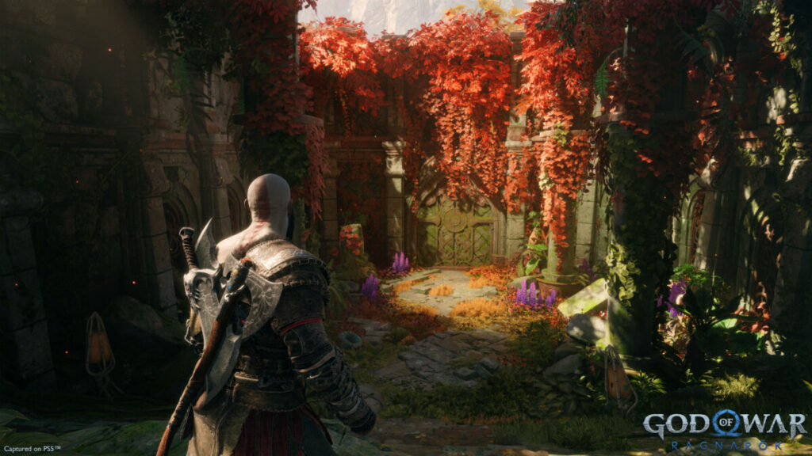
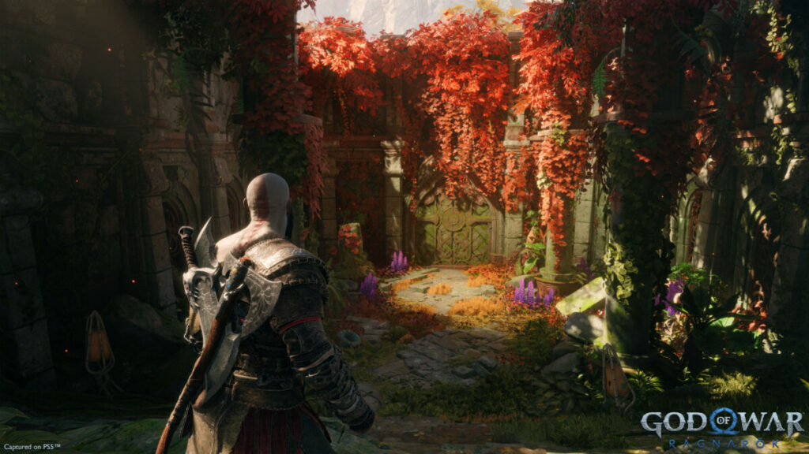

Três anos após os eventos do jogo anterior, o Fimbulwinter, um grande inverno que abrange três verões, está chegando ao fim o que dará início ao Ragnarök profetizado. Kratos e Atreus voltam da caçada para casa depois de escapar por pouco de uma emboscada de Freya.
Kratos retorna para o combate com uma variedade de armas e habilidades. A grande estrela é novamente o Machado do Leviatã introduzido no jogo de 2018. Suas Lâminas da Fúria, destaque da trilogia original, também retornam, mas com algumas novidades
s recompensas vêm. Elden Ring se resume a isso: mudanças. E vai além, pois é sobre mudanças muito boas!


 
